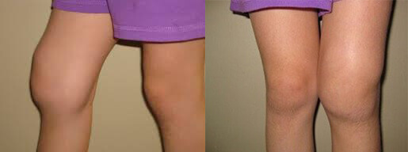
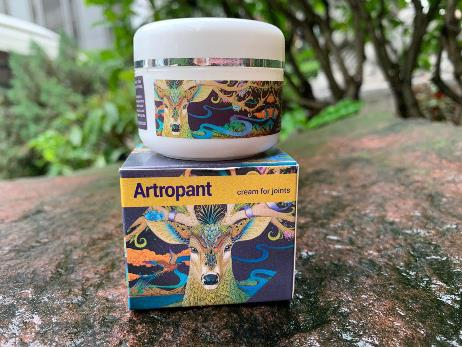
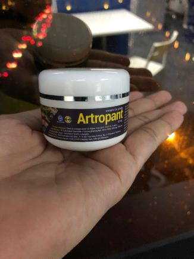
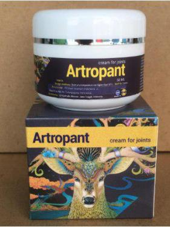
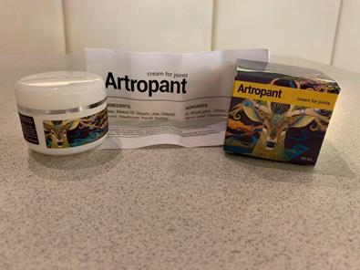

"Ketika nyeri sendi menghambat aktivitas normal kita, kita hanya bisa mengharapkan suatu keajaiban!" - Wawancara eksklusif dengan seorang profesor legendaris yang berhasil menciptakan suatu keajaiban!
Tamu kita hari ini adalah seorang inovator legendaris dari Jakarta - Dr Wahyu Prasetyo, PhD.
Selamat pagi, Dr Wahyu. Sebelumnya, mari kita buka sesi ini dengan memperkenalkan diri Anda secara singkat.
Halo semua, saya Dr Wahyu. Saya lahir, menempuh pendidikan dan bekerja di Jakarta. Saya bekerja sebagai ahli ortopedi hingga tahun 2009.

Apakah ada hal buruk yang terjadi pada tahun 2009, hingga akibatnya Anda berhenti bekerja sebagai ahli ortopedi?
Pada tahun 2007, istri saya Wulan didiagnosis penyakit osteoarthritis lutut. Harus saya akui, masa-masa itu terasa sangat berat dan merupakan titik balik dalam kehidupan saya. Kami mencoba segalanya selama 2 tahun untuk menyembuhkan istri saya: fisioterapi, berhenti melakukan latihan yang berat, mengonsumsi berbagai macam vitamin dan suplemen makanan (kondroitin, glukosamin, MSM dan lain sebagainya), gel, salep. Tapi semuanya sia-sia. Tidak ada yang berhasil dan kami benar-benar putus asa. Saya merasa frustasi dan kecewa, apalagi jika ingat bahwa saya sendiri adalah seorang ahli kesehatan tapi saya malah tidak bisa melakukan apa pun untuk membantu menyembuhkan istri saya. Waktu itu saya berpikir apakah benar-benar tidak ada cara lain untuk menyembuhkan orang yang saya cintai? Kemudian saya mulai melakukan sebuah penelitian.
Penelitian seperti apa yang Anda lakukan? Bisakah Anda menjelaskannya lebih rinci?
Ketika Anda melihat sendiri bahwa istri Anda tidak akan bisa berjalan normal untuk beberapa tahun ke depan, Anda pasti akan melakukan segala tindakan untuk mencegah hal itu terjadi. Sama halnya dengan saya, saya tidak bisa berdiam diri saja dan pasrah. Akhirnya, saya pun mulai mencoba melakukan penelitian. Saya mempelajari semua materi tentang penyakit persendian, baik secara langsung maupun tidak langsung. Saya harus mempelajari fisiologi, psikosomik dan biokimia. Semua uang saya hampir habis untuk mencari tahu semua rahasia dalam bidang ini dari para spesialis terbaik di Asia yang pastinya telah memahami masalah persendian yang parah sekalipun dengan jauh lebih baik daripada saya.
Pada Desember tahun 2009, saya akhirnya mengetahui bahwa dengan perpaduan bahan-bahan tertentu, Anda bisa mendapatkan obat yang mampu menghilangkan rasa sakit pada persendian untuk selama-lamanya. Akan tetapi, bahan-bahan khusus ini tidak ada di Indonesia. Jadi saya harus meminjam sejumlah uang dan memesannya dari berbagai negara di Asia. Bahan-bahan yang saya pesan akhirnya tiba sebulan kemudian, tetapi masih ada masalah lain - tidak ada tenaga ahli laboratorium yang bersedia membantu penelitian saya. Untungnya, teman-teman lama saya siap membantu saya dalam penelitian ini. Jadi, 3 minggu kemudian saya berhasil menemukan sebuah formula yang tepat dan Wulan pun mulai mengujinya sendiri.
Puji Tuhan! Hasilnya melebihi ekspektasi saya!
Apa yang terjadi? Bagaimana hasilnya?
Kondisi Wulan semakin membaik setiap harinya. Setelah 7 hari, Wulan mulai bisa pergi sendiri ke supermarket dan membeli beberapa makanan. Dan senyumnya, yang sangat saya rindukan, kembali pada wajahnya dan menghiasinya. Setelah 2 minggu, arthritisnya hilang total! Terdengar memang mustahil untuk menjadi nyata tapi hasil uji lab menunjukkan bahwa Wulan sudah sehat total. Sudah 7 bulan berlalu dan Wulan tetap sehat, tidak ada tanda-tanda munculnya arthritis lagi. Saya sangat senang!

Anda sungguh hebat dan teladan bagi kita semua! Tetapi Anda tidak diam saja dengan hasil ini yang begitu memuaskan, kan?
Iya, tapi tidak langsung saat itu juga. Awalnya kami menikmati hidup dan menghargai setiap waktu yang kami habiskan bersama. Tidak lama kemudian, Wulan melahirkan putri kami yang cantik. Dia sangat bersyukur telah bebas dari masalah persendian, terlebih karena kondisi kehamilan juga merupakan beban besar pada persendian.
Pada suatu malam, Wulan bertanya kepada saya apakah banyak orang di luar sana yang juga mengalami nyeri sendi. Kemudian kami melihat statistik yang ada dan ternyata cukup banyak orang yang mengalami masalah yang sama. Lebih dari 1 juta orang di Indonesia kena berbagai macam penyakit persendian. Kemudian Wulan menanyakan sebuah pertanyaan yang mengubah hidup saya selamanya: Bisakah kita membantu orang lain dengan menyembuhkan mereka? Membuat mereka kembali bahagia? Dan pertanyaannya ini semakin membuat saya jatuh cinta lagi padanya. Dia adalah hal terbaik yang pernah terjadi dalam kehidupan saya. Dan saya setuju dengan idenya. Butuh waktu sekitar 3 tahun untuk membuat dan menyempurnakan formula Artropant - yang terbaik dan sangat terjangkau bagi masyarakat kita.
Terdengar sangat luar biasa. Tolong jelaskan lebih rinci tentang Artropant.
Wulan dan saya melakukan sesuatu yang tidak pernah dilakukan orang lain sebelumnya. Artropant adalah krim revolusioner yang berdasarkan:
- Mentega Shea
- Gliserin
- Panthenol
- Karet Xanthan
Sayangnya, sebagian besar bahan ini tidak dijual di Indonesia, jadi kami harus membelinya dari berbagai negara di Asia.
Berkat formula uniknya, Artropant dapat mengatasi berbagai penyakit persendian:
- Arthritis
- Arthrosis
- Coxarthrosis
- Osteoarthrosis
- Osteochondrosis
- Osteochondritis
- Osteoporosis
- Meniscus injuries
- Gonarthrosis
Luar biasa! Menurut saya sendiri, Anda benar-benar seorang inovator sejati. Bagaimana cara Anda melakukan semua ini?
Semua ini memang membutuhkan perjuangan dan kerja keras selama bertahun-tahun. Tahun depan kami juga akan merayakan hari jadi perkawinan kami yang ke-10. Sampai saat ini, berdasarkan data lapangan, 17.934 orang sudah mulai kembali menjalani kehidupan normal mereka dan melupakan rasa sakit persendian mereka untuk selama-lamanya.
Tujuan kami adalah untuk menyembuhkan orang lain sebanyak mungkin, bukan hanya untuk mendapatkan profit. Anda mungkin juga akan menyebut kami kuno. Setiap bulan, kami juga mengadakan undian dan memberikan hadiah khusus kepada orang-orang yang menggunakan produk kami:
Artropant tersedia di mana saja?
Sayangnya Artropant belum tersedia di apotek umum. Seringkali apotek hanya menjual produk-produk yang sudah terkenal dan produk baru yang independen sangat susah untuk masuk. Selain itu, apotek juga memiliki kecenderungan untuk menjual produk dengan harga yang tinggi. Bahkan terkadang obat-obatan
dengan efek samping yang buruk pun tetap dijual dengan harga tinggi.
Kami menyediakan situs web resmi di mana Anda bisa memesan Artropant yang asli.
Apakah ada hal lain yang ingin Anda sampaikan kepada para pembaca kami?
Saya dan Wulan memutuskan untuk memberikan diskon 50% untuk setiap pembelian Artropant. Manfaatkan
diskon ini sebelum tanggal
! Setelah tanggal tersebut, Artropant akan kembali dijual dengan harga normal yang cukup terjangkau.
Mari hidup sehat! Artropant adalah produk terbaik yang bisa Anda dapatkan untuk menjaga persendian tetap sehat. Ingatlah, tanpa kesehatan, uang Anda tidak akan ada artinya.
Tika Puspita
Halo Dr Wahyu, terima kasih sudah menciptakan produk ini. Semoga hasilnya juga berlaku pada persendian saya!

satu jam yang lalu
Aulia Pratiwi
Aku sudah sembuh total dari arthrosis! Semua berkat krim Artropant! Trims!
satu jam yang lalu
Anggi Utami
Produk ini 100% efektif! Gue buktinya! Siku ma lutut jadi ngga nyeri lagi deh.
satu jam yang lalu
Andre Pratama
Terima kasih untuk krimnya!!! Anda memang tidak hanya menyelamatkan istri Anda, tapi juga banyak orang di negara ini. Saya sendiri juga sudah coba Artropant untuk osteochondrosis saya dan hasilnya di luar dugaan! Saya bisa sembuh total!
satu jam yang lalu
Wahyu Prasetyo
Halo, terima kasih telah berbagi opini Anda. Selalu ikuti petunjuk yang ada pada kemasan Artropant untuk mendapatkan hasil yang maksimal.
Salam, Wahyu.
satu jam yang lalu
Angga Kusuma
Ada yang bisa kasi saran riil di sini? Aku hampir nyerah gara-gara sakit punggung ini. Ngga tau deh harus gimana lagi. Uda minum pil, pake gel, tapi tetep ngga ada prubahan :(
satu jam yang lalu
Putra
Buat yg sendinya lagi masalah, coba pesen Artropant. Dijamin, kalian ngga akan nyesel. Dulu sendi gue juga sakit, hampir ngga bisa jalan juga. Kemudian ibu saya secara tidak sengaja menemukan krim ini 6 bulan yang lalu. Harganya masih normal waktu itu (tapi menurut gue siy ngga mahal klo ngeliat hasilnya). Sekarang gue uda bebas masalah sendi. Mo gerak ngapain aja, bebas!

satu jam yang lalu
Rini Astuti
Di mana krim Artropant bisa dipesan?
satu jam yang lalu
Fajar Gunawan
Yg bingung belinya di mana, ini link buat beli Artropant di situs resminya, langsung cuzzzz deh buat beli. Mumpung ada diskon. Krim ini sangat efektif.
satu jam yang lalu
Rini Astuti
Trims. Aku udah pesan Artropant. Kira-kira berapa lama ya pengirimannya?
satu jam yang lalu
Fajar Gunawan
Sekitar 3 hari
satu jam yang lalu
Anisa Amalia
Saya membeli krim ini 2 bulan yang lalu untuk saudara perempuan saya. Uda lama dia kena artritis. Hepi banget dia sekarang uda sembuh.
satu jam yang lalu
Rio Setiawan
Beneran ini krim yang benar-benar efektif? Mungkin gue prlu psen juga. Lagi diskon, kan?
satu jam yang lalu
Budiman
Saya juga mendengar tentang krim ini, lupa di mana. Sudah dua tahun sendi kaki saya bermasalah. Terkadang, nyerinya parah dan dokter juga ngga banyak bantu. Setelah baca artikel ini, saya langsung pesan Artropant.
satu jam yang lalu
Rendi
Sepertinya emang banyak orang yang bermasalah ma persendian ya. Aku lihat iklan Artropant sebulan yang lalu dan Artropant sukses nyelametin aku dari osteochondrosis. Menurutku, Artropant jauh lebih ok daripada obat lainnya.
satu jam yang lalu
Tendy
Asli ga sih komen2 di sini? Obat apotek n dokter ngga ada yg oke soalnya.
satu jam yang lalu
Tika
Krim ini sangat efektif dan tidak memiliki efek samping! Gue uda buktiin sendiri khasiatnya.

satu jam yang lalu
Gita Sarita
Kalo beli, wajib beli di situs resminya. Jangan yang lain! Daripada dapet produk palsu ya kan.
satu jam yang lalu
Ika Yuanita
Terima kasih, Dr. Wahyu. Jika bukan karena Anda, saya tidak akan percaya efektivitas Artropant ini! Sudah 5 tahun suami saya juga punya masalah yang sama seperti istri Anda. Sekarang suami saya sudah sembuh dan bebas beraktivitas.
Dan pesanan saya juga sampai dengan sangat cepat.
satu jam yang lalu
Wahyu Prasetyo
Terima kasih kembali. Jika boleh, sebagai informasi untuk teman-teman kita di sini, mungkin bisa diberitahukan perlu waktu berapa lama suami Anda bisa sembuh.
Salam, Wahyu.
satu jam yang lalu
Ika Yuanita
Butuh waktu sekitar sebulan, Dr Wahyu. Suami saya jadi lebih ceria, aktif dan bahagia.
satu jam yang lalu
Wahyu Prasetyo
Saya ikut senang mendengarnya, terima kasih telah memutuskan untuk mencoba produk ini.
Salam, Wahyu.
satu jam yang lalu
Indah
Ngga nyangka, Sciatica gue ilang total! Gue juga uda pesan lagi buat temen-temen gue. Ada yang punggungnya sakit, ada yang sikutnya sakit.
57 menit yang lalu
Maria Dewi
Gue baru aja pesen...
Diskonnya wow!
Konfirmasi pesenan gue juga cepet. Mereka langsung telpon balik cuman dalem sekian menit. Bye bye radang sendi!
55 menit yang lalu
Anita Amelia
Saya beli produk ini untuk dipake sendiri. Sudah sekian tahun saya punya arthritis. Kalau cuaca lagi dingin, wah, nyerinya luar biasa. Mau nangis rasanya. Tapi sejak pake Artropant, semua itu uda nggak ada lagi. Kurang dari sebulan, kondisi badan saya kembali normal.
53 menit yang lalu
Jessica Kurniawan
Ada teman saya yang menjual krim ini, harganya jauh lebih mahal daripada harga di situs jadi akhirnya saya urung beli walau agak sungkan juga. Sekarang lutut saya bebas nyeri, makasi!
48 menit yang lalu
Wahyu Prasetyo
Jadi ada orang yang menjual krim ini dengan harga yang jauh lebih tinggi. Sangat disayangkan mereka mencari nafkah dengan mengorbankan orang sakit. Terima kasih atas informasinya, kami akan lebih berhati-hati dalam proses distribusi produk ini.
Salam, Wahyu.
36 menit yang lalu
Ria
Asam urat langsung ilang cuma pakai Artropant satu kali. Sekarang saya selalu membawa krim ini ke mana-mana untuk berjaga-jaga.
36 menit yang lalu
Anton Hidayat
Jika sendi kalian bermasalah, percayalah, Artropant lah solusinya. Pengiriman mereka juga sangat cepat. Hanya dalam 3 hari, pesanan saya sudah sampai.

39 menit yang lalu
Wahyu Prasetyo
Terima kasih! Kami selalu berusaha untuk mengirimkan Artropant secepat mungkin agar para pelanggan bisa segera mulai berobat.
Salam, Wahyu.
36 menit yang lalu
Cinta Damai
Ngga sengaja saya nemu artikel ini. Inspiratif banget. Dan sedihnya, memang obat2 di pasaran ngga ada yg ngefek buat arthritis saya. Akhirnya, saya nekat coba krim ini. Pengirimannya cepet, begitu sampe langsung saya coba. Habis 1x pake, badan langsung enakan!
31 menit yang lalu
Linda
Uhmm mo pesen tapi ragu. Di apotek lom ada. Adanya cuman di online. Tapi takutnya, tipu-tipu.
27 menit yang lalu
Made Wahyu Prasetyo
Saya sampaikan lagi bahwa Artropant bisa dipesan HANYA di situs web resmi kami. Untuk menghindari kesalahpahaman, silakan klik tombol tautan di atas! Saya juga ingin mengingatkan Anda bahwa saat ini Artropant dijual dengan setengah harga, namun promosi ini tidak akan berlangsung lama, jadi pesan sekarang juga!
Awas produk palsu.
Salam, Wahyu.
15 menit yang lalu